Notes
Mandatory parts
- Coolant - at least 2 jugs
- Timing belt
- Crank bolt - mandatory - it’s a stretch bolt and cannot be re-used. Comes with the gates kit.
Technically optional parts
Not absolutely required but you’d be an absolute fool if you didn’t do them
Please just buy these and replace them now.
- Crankshaft seal
- Timing belt tensioner
- Water pump / gasket / accessory belt tensioner
- Accessory Belt
Opportunistic Items:
Optional but a great time to do these things if you were eventually going to.
Sound symposer delete plug - Unless you like it?
Intake valve cleaning - Most people use walnut blasting - you’ll be exposing the intake valves and would be a great time to clean them up if you’re so inclined.
Passenger engine mount - We’ll be removing this so it’s a great time to throw a new one on there. Not very hard to do at any point so this one is very optional.
Any intake hoses/things you want to replace
Tools
Beyond all the general sockets/wrenches/extensions/jacks
Hose clamp tool - not required but worth its weight in gold
Torx socket - needed to remove studs from passenger engine mount
Timing tool kit - I used this kit from amazon but it looks pretty generic so just buy one with the same tools if it’s cheaper. We’ll need the locking pin, the “X” shaped cam holder, and the flywheel locking tool from the kit.
Ford Pulley Timing Tool
You can buy it by itself but also comes in kits like this one, which has the other tools you need which are listed above.
Cheater bar or big impact wrench (plug in ones are cheap and have a lot of power)
Torque wrench
Advice
Have a way to organize and label all the bolts will make this infinitely easier.
I had a bunch of paint mixing cups and used about 9 of them, labeling them by the part they came from, or what they were; “alternator”, “intake manifold”, etc..
Removal
Disconnect battery
- Unhook the negative terminal on the battery
- http://sluggyjunx.com/auto/2014_Fiesta/Resources/Service_Manual/serg1603441.htm
- Do not skip this step
Remove passenger headlight
- http://sluggyjunx.com/auto/2014_Fiesta/Resources/Service_Manual/serg1601780.htm
Remove coolant overflow reservoir
- Coolant will spill out, catch it if you can
Loosen tensioner pulley bolts
- But do not remove bolts from the tensioner pulley yet
- 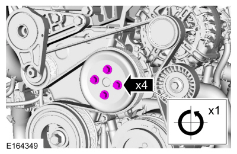
Remove passenger front wheel front wheel
- This is necessary to move the halfshaft and access the timing pin
Remove the undertray
- This covers up the belts from the underneath
- The image is from underneath the car, in front of the passenger wheel well

Remove axle shaft clamp
- 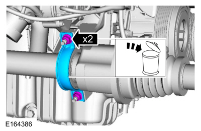
Remove axle shaft clamp bracket
- The timing pin hole is behind this bracket
- 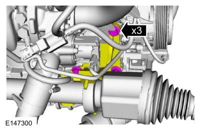
Remove crankshaft access hole bolt
- This is where we will install the crankshaft locking pin in a little bit (don’t do it yet)
- This is located behind the bracket in step 5 - Note the bolt holes from the bracket
- Do not install the timing pin holder yet

Remove the alternator and accessory belt
- Remove the connections
- When reinstalling, use 15NM

- De-tension or remove the belt - you should be replacing this anyways since it’s cheap
- 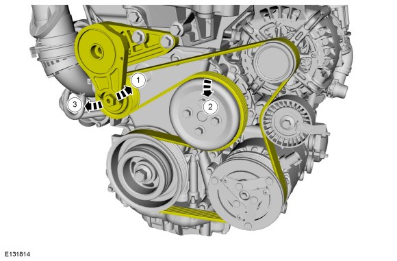
- When you reinstall use the diagram above/ this one below
- If solo, my recommendation for installation is to install everything except for the alternator pulley. Then, pull hard on the belt to load up the tensioner. While you’ve got it pulled, insert something into the tensioner to temporarily hold it in place. I used a ½” square socket inserted. This allowed me enough extra length to shimmy the belt over the top. Since you’re dealing with a tensioned system - watch your fingers. When installed, just pull out the inserted item and it’ll tension the system. It seems to be dampened so it won’t ‘snap’ on you dangerously.
- 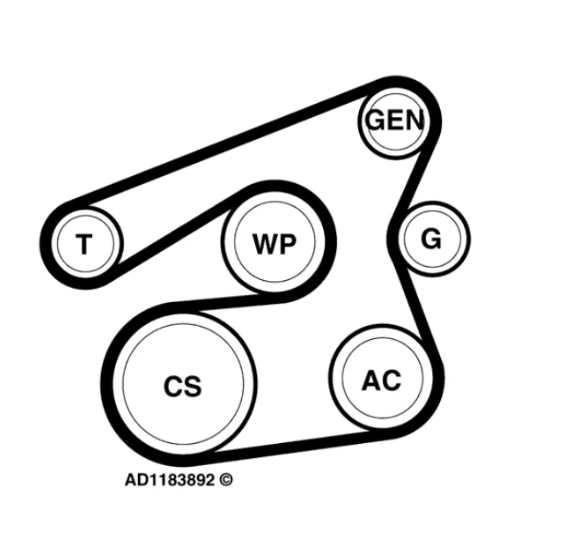
- Remove top bolts
- When reinstalling, use 48NM
- 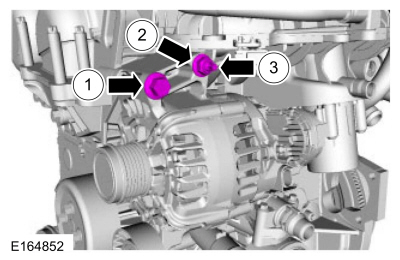
- Remove bottom bolt

Remove intake manifold
- This is not in the service manual - but I’m not sure how it’s possible to remove the starter motor without doing this.
- http://sluggyjunx.com/auto/2014_Fiesta/Resources/Service_Manual/serg1602316.htm
- tfRemove a shit load of hoses and clamps
- The round ones are ‘quick disconnect’ and when new you can squeeze/pull. Good luck!
- 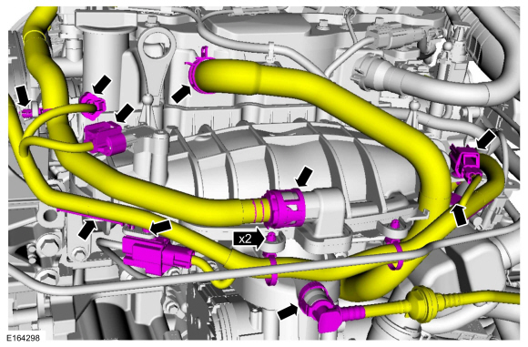
- 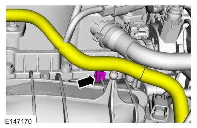
- Remove the “Sound Symposer”
- This is a great time to put a plug in here and throw it away
- Reinstall with 5nm on the clamp
- 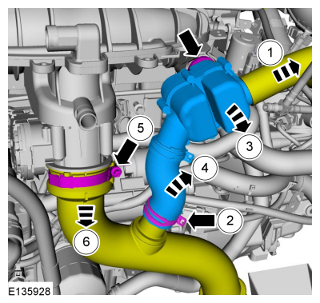
- More disconnect, this one is in front of the engine

- And more hoses and wires. This one is right under the front bumper/easy
- Reinstall top bolt at 15NM
- Reinstall hose clamp at 5NM

- Now remove the actual intake manifold bolts - but don’t pull it out yet
- Reinstall the top 2 bolts at 17NM
- Bottom 4 bolts at 10NM
- 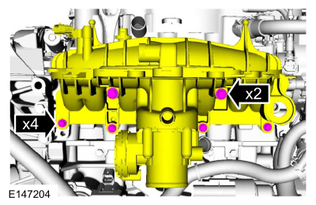
- Unplug this cable
- 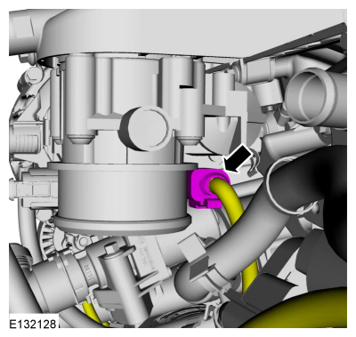
- Alright now rip it out (carefully)
- Now you can see your intake valves
- Some people stop here and walnut blast the valves to clean them up.

- Congrats, you did all of that just so you can remove the starter!
Remove starter motor
- Highly recommend removing the intake manifold first - I’m not sure it’s even possible without doing that actually.
- http://sluggyjunx.com/auto/2014_Fiesta/Resources/Service_Manual/serg1603535.htm
- We gotta remove the intake pipe so start by removing the connectors to the hose that fed the intake manifold/sound symposer

- Remove the pipe
- Reinstall with 11nm on the lower bolt
- Reinstall with 5nm ont he upper clamp
- 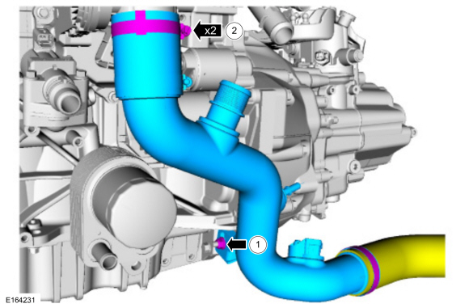
- Remove the starter motor
- There are 3 bolts that hold the motor to the flywheel housing - Unscrew them
- The frontmost bolt is short, the other 2 are long
- The bolt is on the driver side and it screws into the starter motor housing
- For all 3 bolts, I found it easiest to access from underneath the car, using extensions.
- Unscrew the bolts….but do not fully remove them since we’ll need the 2 longer ones for the flywheel locking tool in a bit.
- Then remove the electrical connections - there are 3 nuts back there but you only need to remove the 2 highlighted.

Support engine
- Use a jack so you can adjust up and down for clearance later as needed
- We’ll be removing the passenger engine mount and need to support the engine. Use a block of wood so that you don’t poke a hole in it or something.

Remove the passenger engine mount
- This is near where the coolant reservoir was located
- Great time to install a brand new one
- 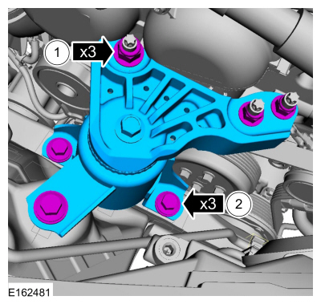
Remove accessory belt tensioner and belt
- 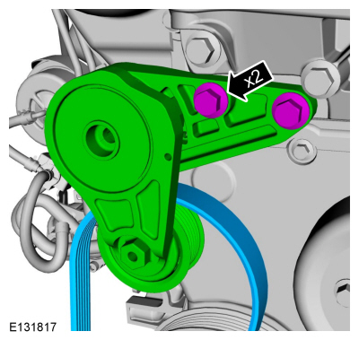
Remove the timing cover
- Remove strap and bolt if there is one

- Start by removing all the other items first, then remove the blue cover afterwards
- #1 you should have already loosened
- #2 is a torx socket to remove the stud
- You can store it back in this spot but remember to remove when reinstalling cover!
- #6 use 8mm socket
- The bolt next to #4 is longer than the others
- #4 is t30 driver torx

- Unclip hoses that run over the timing cover
- May have already been done as part of intake manifold

Remove engine mount bracket
- This is what the passenger side engine mount was bolted to
- Note the different bolt lengths
- Once it’s off, you can just put the bolts back in their respective holes so you remember easier during assembly.
- 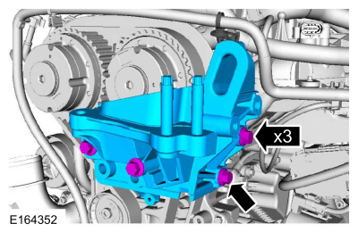
Rotate the engine to an 11 oclock
Rotate clockwise only
- Put an 18mm socket on the flywheel and rotate clockwise only
- Rotate until the dimples on the crank are both at 11 oclock position

Install crankshaft locking pin
With the engine at 11 oclock still
- This is the one behind the halfshaft. Fully thread it in until it bottoms out
- 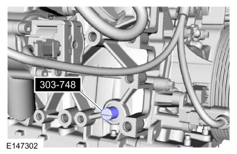
Rotate crankshaft to TDC (to 12 oclock)
- Rotate clockwise gently until the engine crank rests on the pin we just inserted.
- The bottom image is a cutaway showing how it works

Lock the flywheel
- Use the long bolts from the starter motor and 2 nuts (may need to get your own)
- Make sure the tool reaches in and touches/locks the flywheel. Generic kits may have several lengths to choose from - ensure that it’s touching.
- Snug everything down

Lock the camshaft
- Insert the lock tool, this tool is directional so if it doesn’t fit, its probably upside down
- You may need to rotate camshafts slightly - tool will fit in snug but should go with just moderate pressure at most.

Remove timing belt tensioner
- Now that everything is locked….you double checked right?
- It’s under some tension so be careful / read the ford warning about this.
- You can try squeezing the pins together to remove tension and install a locking pin…but that’s difficult. Instead, just remove the bolt from the tensioner since we’re installing a new one anyway.
- It’s under tension but extremely non-dramatic to remove when I did it.

Remove timing belt pulley and sprocket
- You’re gonna need some ugga-dugga power / breaker bar to do this
- It’s the same 18mm socket you used to rotate the engine
- I used a cheap HF plug-in impact wrench…and just let er buck. Took about a net total of 60+ seconds of impact and it came right off. If it doesn’t come immediately (it wont), give your tool a rest and just keep hitting it repeatedly. Don’t give up very easily, it will come off.

Remove the timing sensor
- This is the location we’ll install the timing position tool in a bit
- 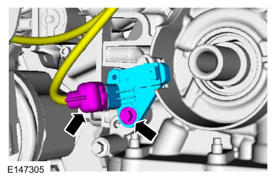
Remove crankshaft seal
- Easiest way is to thread a self-tapping screw into this just a quarter inch at most and pull out with pliers.
- Do not screw in too deep as it’s a pretty shallow seal
- You may need to drill a pilot hole first - there is a metal ring behind the seal
- Reference your replacement seal for the geometry
Installation
Install crankshaft seal
- This is a little weird but do your best to get the lip of the seal correctly around the shaft
- Seal should be fully seated and flush with the housing
- You could use the timing belt sprocket possibly to push this in evenly if having issues
- Avoid anything sharp while installing - don’t ruin your new seal!
Install timing belt, tensioner & pulley
- Install the new tensioner - do not pull the pin!
- Install pulley wheel

- Install belt
- Across the top, it should be tight with no slop

- Release tensioner pin to tension the belt
- Double check everything is set first
Install crankshaft pulley
- Install the alignment tool where the sensor was located (purple #1 item in image)
- Insert the pulley and finger tighten the new bolt #4

- Remove the alignment tool
- Tighten the crank bolt
- Stage 1 = 100NM or 74 ft/lbs
- Stage 2 = 90 degrees
- Stage 3 = Wait 2 seconds
- Stage 4 = Tighten an additional 15 degrees

Remove Locking Tools
Remove the locking pin
- Do not install plug yet

Remove flywheel lock
- Leave the bolts in to make reinstalling starter a bit easier

Remove timing tool

Checking timing
- With all the locking tools, you’re going to rotate the engine (clockwise) for 1-¾ turns (not quite 2 full turns).
- Reinstall the crank locking pin
- Rotate crank again until its resting on the pin
- Insert the timing tool to ensure it fits again - if it does, it’s successfully timed.
Reassembly
Follow the instructions in reverse. Make sure to install the starter before the intake manifold. The intake manifold before the alternator. The alternator before the engine mount. If you labeled the bolts coming off, this should be relatively easy.